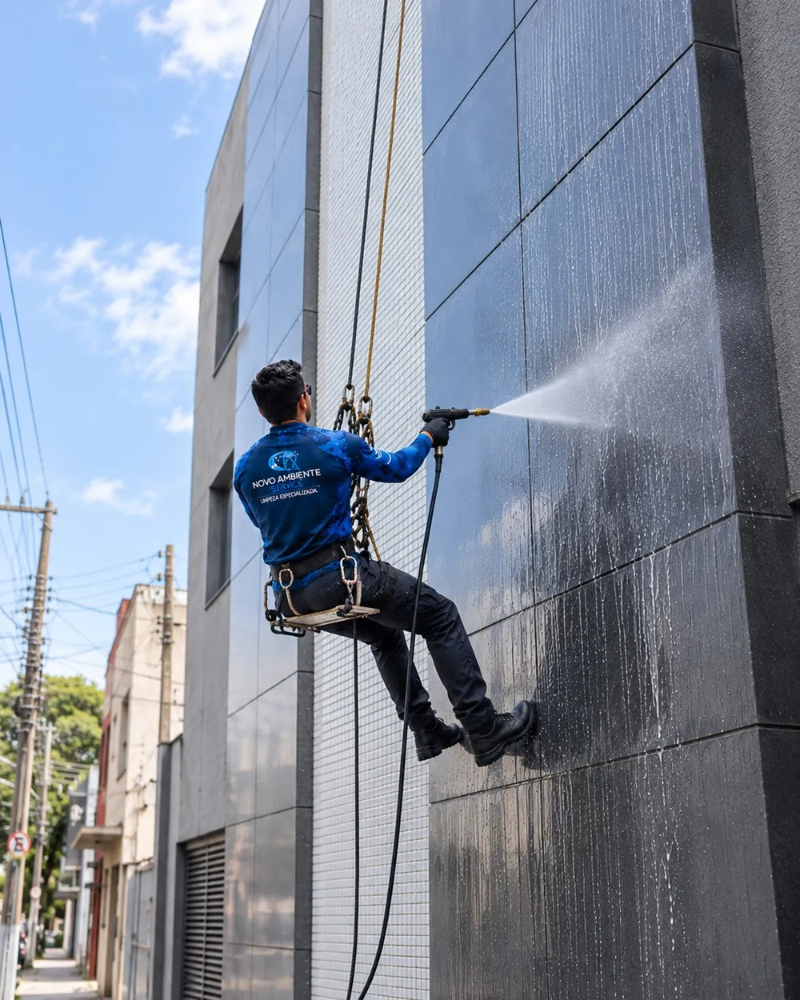
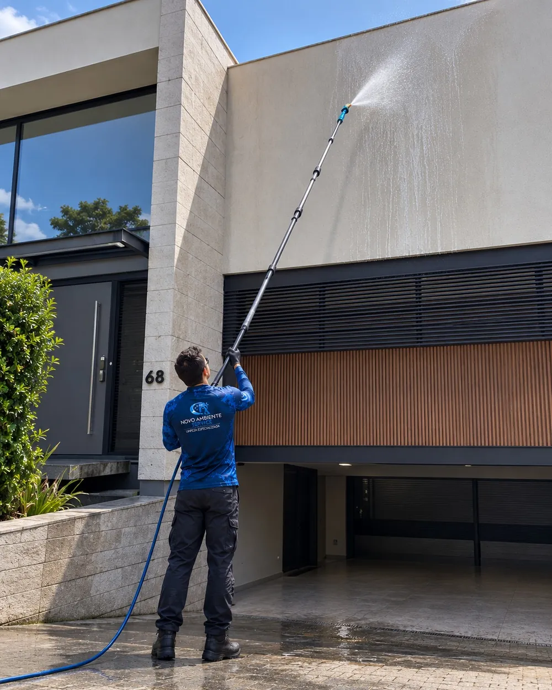
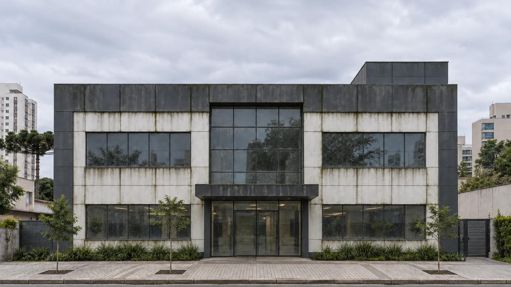
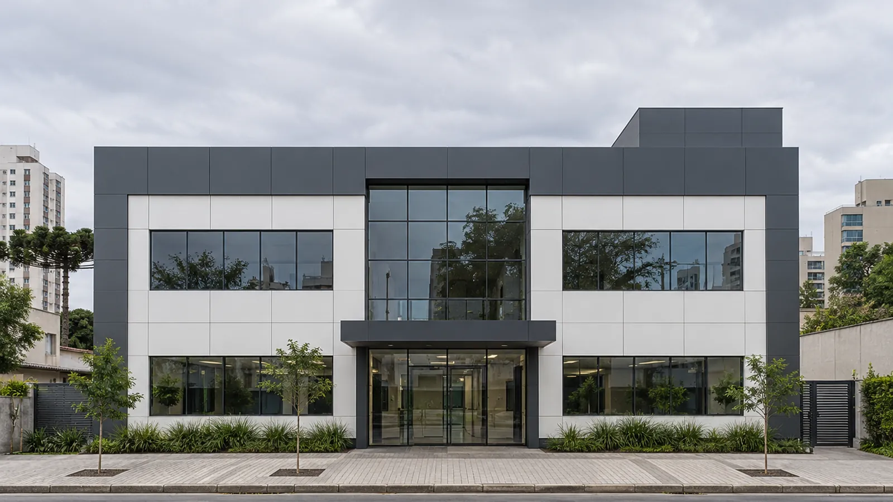

Condomínio
Fachada limpa valoriza o prédio e é o que o morador e quem passa na rua veem primeiro.
Orçamento pro condomínio
Poluição, limo e sujeira saem da fachada de ACM, pastilha, textura e pedra, e também do muro, da grade, do portão e das calhas.
Fachada de vidro tem página própria, a de limpeza de vidros. Aqui ficam os outros revestimentos.
Painel de alumínio composto de prédio comercial e loja, sem riscar a pintura do painel.
Rejunte escuro e limo saem da pastilha de condomínio e prédio residencial.
Sujeira e fuligem saem da textura de casa, muro e prédio.
Revestimento de pedra de fachada e de entrada de prédio.

Quando precisa, lavamos a fachada completa: além do revestimento, o muro, a grade, o portão, os rufos e as calhas. A casa ou o prédio fica limpo por inteiro, e não só a parte de alvenaria.
Muro · grade · portão · rufos e calhas
Orçamento da fachada completaFachada limpa valoriza o prédio e é o que o morador e quem passa na rua veem primeiro.
Orçamento pro condomínioA fachada é a primeira impressão do seu negócio, antes de o cliente entrar.
Orçamento pra empresaFachada de galpão, barracão e prédio industrial, com acesso planejado e data combinada.
Orçamento pra indústriaMuro, portão e fachada de textura ou pedra com a cor de volta.
Orçamento pra casaTreinamento, certificação e documentação de quem trabalha em altura.
O Lucas tem o treinamento da NR-35, a norma de trabalho em altura, e os parceiros que fazem o rapel também.
Nos serviços de rapel, os técnicos têm certificação IRATA (nível 1 ou 2) e NR-35.
A empresa tem PGR, PCMSO e LTCAT. Quando o serviço pede, fazemos a APR (análise preliminar de risco) e a OS (ordem de serviço) do cliente, com valor à parte.
Poluição e limo saem das juntas e do painel, e a fachada volta a ter a cor de quando foi entregue.


Nota 4,8 no Google, com 16 avaliações. Capricho, pontualidade e atenção do técnico são o que os clientes mais elogiam.
Nossa, atendimento incrível! Meus vidros ficaram irreconhecíveis!
Excelente! Pontuais e eficientes.
Serviço 5 estrelas, os moços que vieram aqui são muito competentes e atenciosos.
Uma foto e o endereço pelo WhatsApp já bastam pra começar. Se preferir, fazemos uma visita técnica presencial pra avaliar o serviço.
Orçamento sem compromisso e proposta personalizada, pra uma limpeza só ou com plano recorrente.
A equipe chega no dia combinado, com o acesso certo pra cada serviço.
Pelo WhatsApp (41) 99779-9646. Uma foto e o endereço já bastam pra começar, e o orçamento é sem compromisso. Se preferir, marcamos uma visita técnica presencial.
ACM, pastilha e cerâmica, textura e pintura, pedra e granito. Fachada de vidro e pele de vidro estão na página de limpeza de vidros.
Sim. Quando precisa, lavamos a fachada completa: muro, grade, portão, rufos e calhas, além do revestimento.
Sim. Fazemos a limpeza pontual ou periódica: semanal, quinzenal, mensal, trimestral ou semestral, com o plano montado conforme a necessidade de cada cliente.
Pix, dinheiro, cartão de débito, cartão de crédito à vista ou parcelado e boleto (só pra empresas). O pagamento com cartão é feito por link e tem taxa; no crédito parcelado, também juros.
Sim, com agendamento antecipado.
Sim, emitimos nota fiscal.
Sim. Fazemos visita técnica presencial pra avaliar o serviço e montar uma proposta personalizada.
Sim. Atendemos Curitiba e a Região Metropolitana. Mande o endereço pelo WhatsApp e confirmamos.
Mande uma foto da fachada pelo WhatsApp ou peça uma visita técnica, e receba a proposta sem compromisso.